OI Wiki · prijevod · Računska geometrijaOI Wiki · translation · Computational geometry
TriangulacijaTriangulation
Sadržaj
U geometriji triangulacija je podjela ravninskog objekta na trokute, a poopćeno – podjela višedimenzionalnog geometrijskog objekta na simplekse. Za zadani skup točaka postoji mnogo triangulacija, npr.:
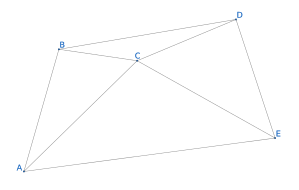
Ova stranica predstavlja dvodimenzionalnu Delaunayjevu triangulaciju (kraće DT) i algoritam njezine konstrukcije metodom podijeli pa vladaj.
Delaunayjeva triangulacija
Definicija
U matematici i računskoj geometriji, za zadani diskretan skup točaka \(P\) u ravnini njegova Delaunayjeva triangulacija DT(\(P\)) zadovoljava:
- Svojstvo prazne kružnice: DT(\(P\)) je jedinstvena (ako nikoje četiri točke ne leže na istoj kružnici) i u DT(\(P\)) unutar opisane kružnice bilo kojeg trokuta nema drugih točaka.
- Maksimizacija najmanjeg kuta: među svim triangulacijama skupa \(P\), trokuti DT(\(P\)) imaju najveći najmanji kut. U tom smislu DT(\(P\)) je triangulacija najbliža pravilnoj. Konkretno, ako dva susjedna trokuta čine konveksan četverokut, zamjenom njegove dijagonale najmanji od unutarnjih kutova tih dvaju trokuta više se ne povećava.
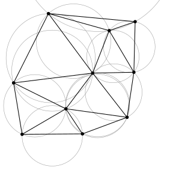
Svojstva
- Najbliže točke: trokute čine međusobno najbliže tri točke, a dužine (stranice trokuta) se međusobno ne sijeku.
- Jedinstvenost: bez obzira na to iz kojeg dijela područja počnemo konstrukciju, na kraju dobivamo isti rezultat (ako nikoje četiri točke skupa ne leže na istoj kružnici).
- Optimalnost: ako se dijagonala konveksnog četverokuta kojeg čine bilo koja dva susjedna trokuta može zamijeniti, najmanji od šest unutarnjih kutova tih dvaju trokuta neće se promijeniti.
- Najpravilnija: ako najmanje kutove svih trokuta triangulacije poredamo uzlazno, niz dobiven za Delaunayjevu triangulaciju ima najveće vrijednosti.
- Lokalnost: dodavanje, brisanje ili pomicanje jednog vrha utječe samo na susjedne trokute.
- Konveksna ljuska: vanjski rub triangulacije čini konveksan mnogokut (konveksnu ljusku).
Algoritam podijeli pa vladaj za konstrukciju DT
Postoji više algoritama za konstrukciju DT; ovdje predstavljamo algoritam podijeli pa vladaj vremenske složenosti \(O(n \log n)\).
Prvi korak konstrukcije DT metodom podijeli pa vladaj jest sortirati zadani skup točaka uzlazno po koordinati \(x\), a pri jednakom \(x\) uzlazno po koordinati \(y\), te ukloniti točke koje se podudaraju. Na slici je sortirani skup od \(10\) točaka.
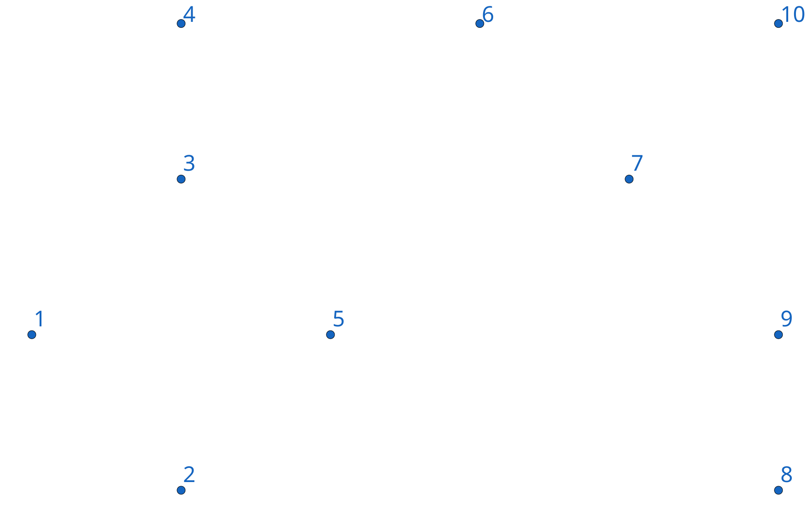
Ako je točaka manje od \(2\), ne treba povlačiti bridove. Inače sortirani skup uzastopno dijelimo po sredini na dva dijela dok podskupovi ne budu veličine \(2\) ili \(3\). Dvije točke spajamo bridom, tri nekolinearne točke trokutom, a od tri kolinearne točke spajamo samo dva para točaka susjednih u sortiranom poretku.
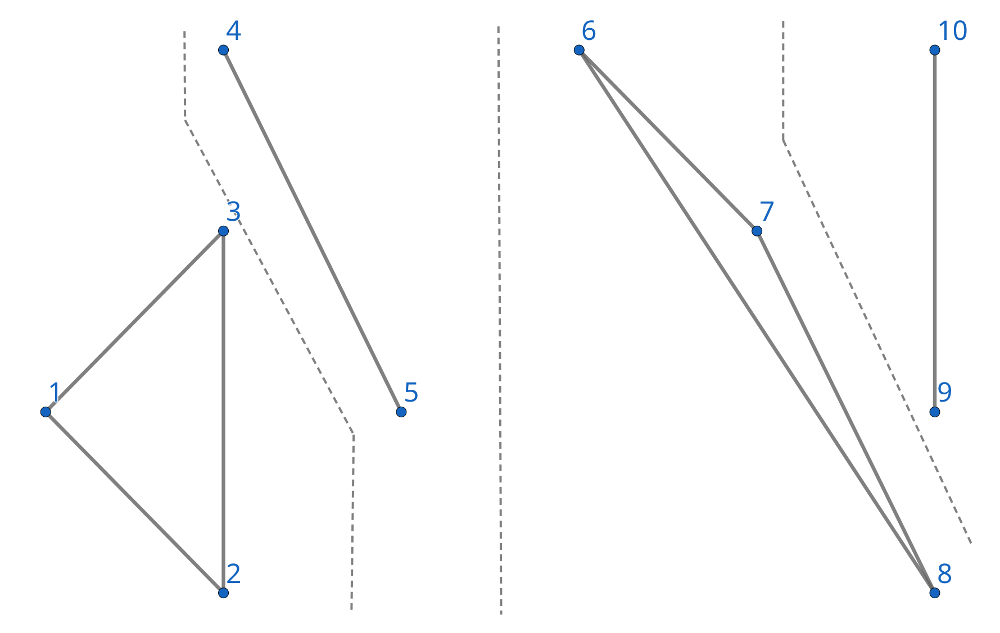
Zatim pri povratku iz rekurzije redom spajamo triangulacije lijevog i desnog podskupa. Bridovi nakon spajanja dijele se na LL-bridove (bridovi unutar lijevog podskupa), RR-bridove (bridovi unutar desnog podskupa) i LR-bridove (bridovi koji spajaju lijevi i desni podskup); na slici su redom sivi, crveni i plavi. Da bi se očuvala svojstva DT, pri spajanju može biti potrebno obrisati neke LL- i RR-bridove, ali se te dvije vrste bridova nikad ne dodaju.
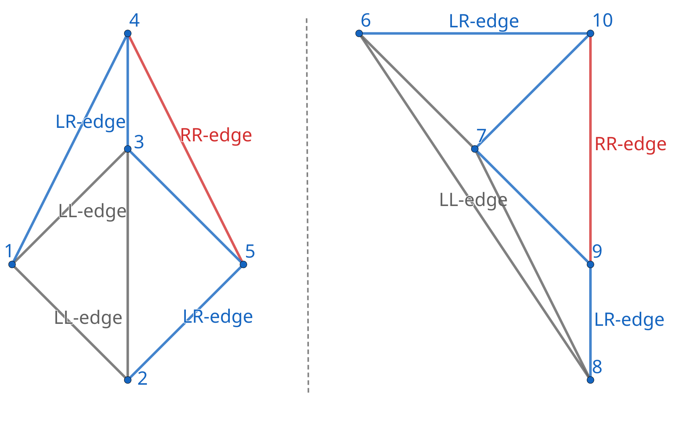
Prvi korak spajanja lijeve i desne triangulacije jest pronaći donju zajedničku tangentu dviju konveksnih ljuski i umetnuti odgovarajući osnovni (base) LR-brid. Rekurzija vraća rubne bridove lijeve i desne ljuske; krećemo od najdesnije točke lijeve ljuske i najljevije točke desne ljuske te se pomičemo duž rubova ljuski dok nijedna točka ne bude desno od usmjerenog pravca od lijevog prema desnom krajištu.
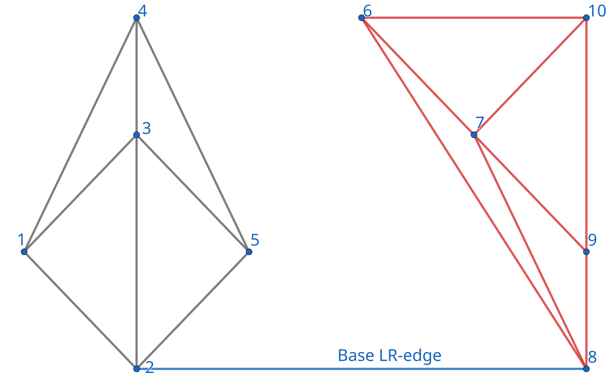
Zatim trebamo odrediti sljedeći LR-brid, onaj neposredno iznad osnovnog LR-brida. Primjerice, za desni skup točaka mogući (desni) krajevi sljedećeg LR-brida su drugi krajevi RR-bridova spojenih s desnim krajem osnovnog LR-brida (točke \(6, 7, 9\)), a lijevi kraj je točka \(2\).
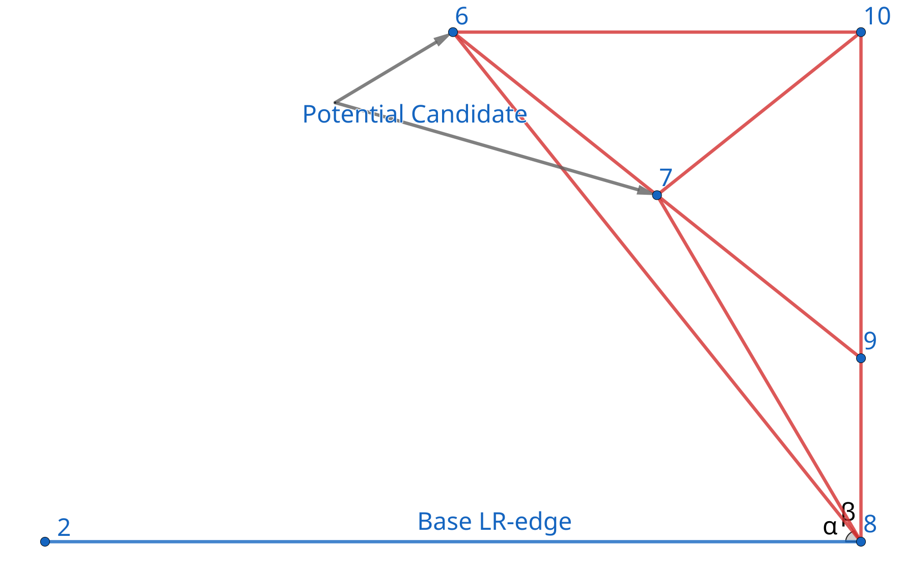
Uzmimo za primjer desni kraj. Počevši od zrake prema lijevom kraju osnovnog LR-brida, u smjeru kazaljke na satu provjeravamo RR-bridove spojene s desnim krajem:
- Valjani kandidati su samo krajevi koji leže strogo iznad osnovnog LR-brida, tj. lijevo od usmjerenog pravca od lijevog prema desnom kraju osnovnog brida. Odgovarajući kut zakreta u smjeru kazaljke na satu mora biti u \((0^\circ,180^\circ)\).
- Neka je trenutni kandidat \(c\), a sljedeći susjed u istom smjeru \(d\). Ako \(d\) leži strogo unutar kružnice opisane dvama krajevima osnovnog LR-brida i točki \(c\), brišemo RR-brid prema \(c\) i nastavljamo s provjerom brida prema \(d\).
- Inače zadržavamo trenutnog kandidata i prekidamo provjeru na toj strani. Budući da je ta strana već Delaunayjeva triangulacija, dovoljno je uspoređivati susjedne kandidate u kružnom poretku.
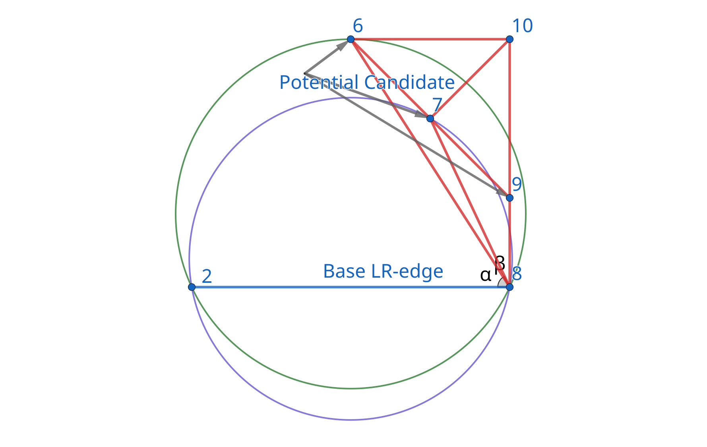
Kao na slici, redom provjeravamo točke \(6,7,9\). Zelena kružnica koja odgovara točki \(6\) sadrži sljedećeg susjeda \(7\), pa brišemo RR-brid prema \(6\); ljubičasta kružnica koja odgovara točki \(7\) ne sadrži sljedećeg susjeda \(9\), pa zadržavamo \(7\) kao desnog kandidata. Nakon toga ga još treba usporediti s lijevim kandidatom da bi se odredio sljedeći LR-brid.
Za lijevi skup točaka postupak je zrcalan: počinjemo od zrake prema desnom kraju osnovnog LR-brida i provjeravamo u smjeru suprotnom od kazaljke na satu.
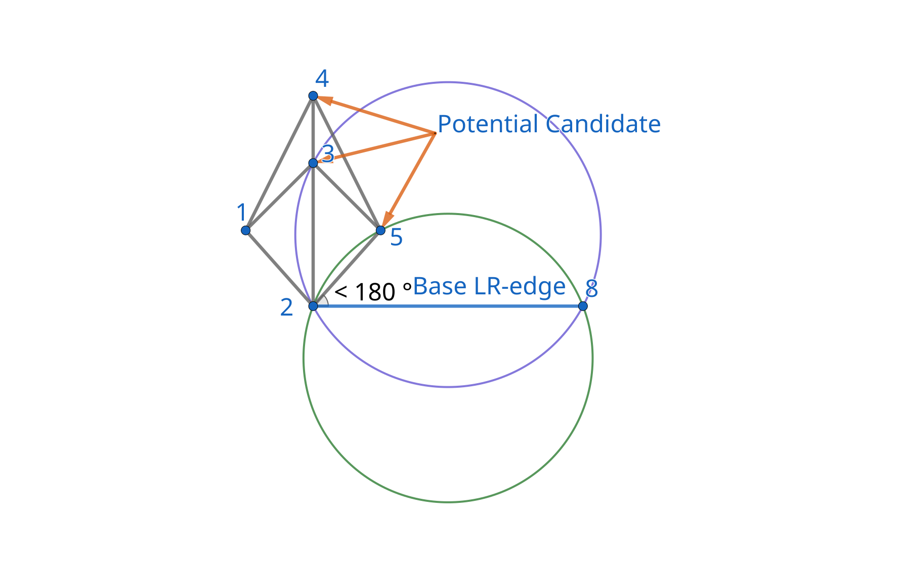
Kad ni lijeva ni desna strana nemaju valjanog kandidata, trenutni osnovni LR-brid je gornja zajednička tangenta i spajanje je gotovo. Ako samo jedna strana ima valjanog kandidata, spajamo ga s drugim krajem osnovnog LR-brida i dobivamo novi LR-brid.
Kad obje strane imaju valjanog kandidata: ako desni kandidat leži strogo unutar kružnice određene lijevim kandidatom i dvama krajevima osnovnog brida, biramo desnog kandidata; inače biramo lijevog. Odabranog kandidata spajamo s krajem osnovnog brida na suprotnoj strani i dobivamo novi LR-brid. Ako četiri točke leže na istoj kružnici, oba su izbora dobra.
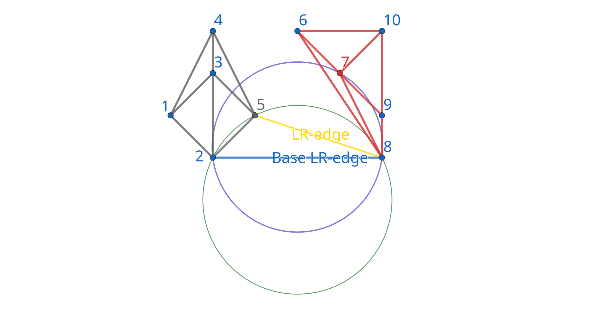
Kad je taj LR-brid dodan, uzimamo ga kao osnovni LR-brid i ponavljamo gornje korake, dodajući sljedeći, dok spajanje ne završi.
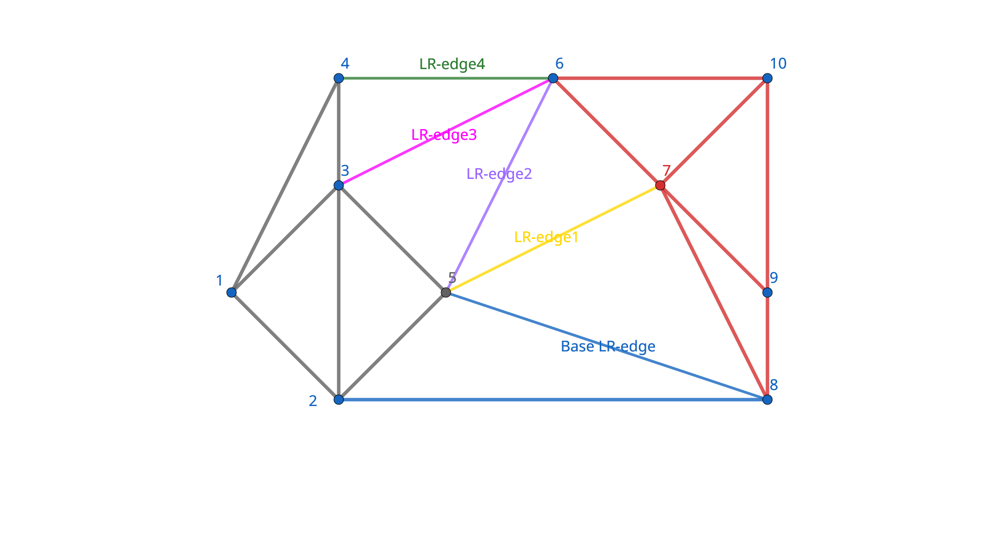
Implementacija
Ako bridove čuvamo samo u neuređenim listama susjedstva i pri svakom dodavanju LR-brida pregledavamo sve susjedne bridove obaju krajeva, vremenska je složenost \(O(n^2)\), jer jedan kraj može uzastopno tvoriti više LR-bridova, pa se njegova lista susjedstva pregledava iznova i iznova.
Referentna implementacija koristi strukturu quad-edge1 za održavanje kružnog poretka bridova. Svaki neusmjereni brid zapisan je s četiri usmjerena brida: dva predstavljaju dva smjera u izvornom grafu, a druga dva predstavljaju dva smjera u dualnom grafu. Ta su četiri zapisa pohranjena uzastopno, pa je dovoljno za svaki usmjereni brid čuvati njegov početak i sljedeći brid s istim početkom u smjeru suprotnom od kazaljke na satu, čime se sljedeće operacije izvode u vremenu \(O(1)\):
| Operacija | Značenje |
|---|---|
rev(e) |
suprotno usmjereni brid |
onext(e) |
sljedeći brid s istim početkom, u smjeru suprotnom od kazaljke na satu |
oprev(e) |
prethodni brid s istim početkom, u smjeru suprotnom od kazaljke na satu |
lnext(e) |
pomak za jedan brid naprijed duž ruba lijeve strane |
onext(rev(e)) |
pomak za jedan brid natrag duž ruba desne strane |
splice(a, b) istodobno mijenja kružne odnose u izvornom i u dualnom grafu; služi za spajanje ili razdvajanje prstenova kojima pripadaju dva brida. connect(a, b) unutar iste strane spaja kraj brida a s početkom brida b. Pri brisanju brida njegova se dva smjera uklanjaju iz odgovarajućih prstenova. Te topološke operacije mijenjaju samo konstantan broj zapisa; referentna implementacija dodjeljuje i reciklira bridove pomoću dinamičkog polja, uz amortizirano vrijeme \(O(1)\).
U kodu je base usmjeren od desnog skupa točaka prema lijevom, pa točke „iznad” osnovnog LR-brida na slikama leže desno od usmjerenog brida base. Lijevi kandidat je onext(rev(base)), a desni oprev(base); nakon brisanja kandidata dovoljno je nastaviti duž kružnog poretka na toj strani.
Implementacija
#include <algorithm>
#include <cmath>
#include <limits>
#include <utility>
#include <vector>
using data_t = double;
struct Point {
data_t x, y;
int id;
};
class Delaunay {
// Svaki neusmjereni brid sastoji se od četiri mjesta (slota)
// Parna mjesta predstavljaju dva smjera u izvornom grafu, neparna dualne bridove
// Sve veze čuvaju indekse, da iteratori ne postanu nevažeći
struct Edge {
int origin, next;
};
std::vector<Point> p;
std::vector<Edge> edges;
std::vector<int> free_edges;
// Približno određivanje predznaka s relativnom tolerancijom
static int sign(data_t value, data_t scale) {
const data_t tolerance =
16 * std::numeric_limits<data_t>::epsilon() * scale;
return (value > tolerance) - (value < -tolerance);
}
static int cross(const Point& a, const Point& b, const Point& c) {
data_t u = (b.x - a.x) * (c.y - a.y);
data_t v = (b.y - a.y) * (c.x - a.x);
return sign(u - v, std::abs(u) + std::abs(v));
}
// Ako su a, b, c poredani suprotno od kazaljke na satu, provjerava je li d unutar opisane kružnice
static bool in_circle(const Point& a, const Point& b, const Point& c,
const Point& d) {
data_t ax = a.x - d.x, ay = a.y - d.y;
data_t bx = b.x - d.x, by = b.y - d.y;
data_t cx = c.x - d.x, cy = c.y - d.y;
data_t a2 = ax * ax + ay * ay, b2 = bx * bx + by * by,
c2 = cx * cx + cy * cy;
data_t bc1 = bx * cy, bc2 = by * cx;
data_t ca1 = cx * ay, ca2 = cy * ax;
data_t ab1 = ax * by, ab2 = ay * bx;
data_t det = a2 * (bc1 - bc2) + b2 * (ca1 - ca2) + c2 * (ab1 - ab2);
// Apsolutne vrijednosti zbrajamo prije oduzimanja, da zbog kraćenja ne podcijenimo pogrešku zaokruživanja
data_t scale = a2 * (std::abs(bc1) + std::abs(bc2)) +
b2 * (std::abs(ca1) + std::abs(ca2)) +
c2 * (std::abs(ab1) + std::abs(ab2));
return sign(det, scale) > 0;
}
static int rot(int e) { return (e & ~3) | ((e + 1) & 3); }
static int rev(int e) { return e ^ 2; }
int org(int e) const { return edges[e].origin; }
int dest(int e) const { return org(rev(e)); }
// Bridovi s istim početkom čine kružnu vezanu listu u smjeru suprotnom od kazaljke na satu
int onext(int e) const { return edges[e].next; }
int oprev(int e) const { return rot(onext(rot(e))); }
// Pomak za jedan brid naprijed duž ruba strane lijevo od e
int lnext(int e) const { return rot(onext(rev(rot(e)))); }
bool left_of(int v, int e) const {
return cross(p[org(e)], p[dest(e)], p[v]) > 0;
}
bool right_of(int v, int e) const {
return cross(p[org(e)], p[dest(e)], p[v]) < 0;
}
int make_edge(int u, int v) {
int e;
if (free_edges.empty()) {
e = (int)edges.size();
edges.resize(edges.size() + 4);
} else {
e = free_edges.back();
free_edges.pop_back();
}
edges[e] = {u, e};
edges[e + 1] = {-1, e + 3};
edges[e + 2] = {v, e + 2};
edges[e + 3] = {-1, e + 1};
return e;
}
// Zamjenjuje sljedbenike dvaju bridova i istodobno ažurira veze u dualnom grafu
void splice(int a, int b) {
int alpha = rot(onext(a)), beta = rot(onext(b));
std::swap(edges[a].next, edges[b].next);
std::swap(edges[alpha].next, edges[beta].next);
}
void delete_edge(int e) {
splice(e, oprev(e));
splice(rev(e), oprev(rev(e)));
e &= ~3;
edges[e].origin = edges[e + 2].origin = -1;
free_edges.push_back(e);
}
// Dodaje brid od kraja brida a do početka brida b
int connect(int a, int b) {
int e = make_edge(dest(a), org(b));
splice(e, lnext(a));
splice(rev(e), b);
return e;
}
// Vraća bridove ljuske koji kreću iz najljevijeg odnosno najdesnijeg vrha, tako da je vanjska strana redom desno odnosno lijevo
// Interval je [l, r); rekurzija obrađuje samo slučajeve s barem dvije točke
std::pair<int, int> divide(int l, int r) {
if (r - l == 2) {
int a = make_edge(l, l + 1);
return {a, rev(a)};
}
if (r - l == 3) {
int a = make_edge(l, l + 1), b = make_edge(l + 1, l + 2);
splice(rev(a), b);
int turn = cross(p[l], p[l + 1], p[l + 2]);
if (turn == 0) return {a, rev(b)}; // kolinearne točke: zadržavamo samo bridove između susjednih točaka
int c = connect(b, a);
if (turn > 0) return {a, rev(b)};
return {rev(c), c};
}
int m = l + (r - l) / 2;
auto left = divide(l, m), right = divide(m, r);
int ldo = left.first, ldi = left.second;
int rdi = right.first, rdo = right.second;
// Od bridova ljuske vraćenih iz rekurzije krećemo se duž ljuske tražeći donju zajedničku tangentu
while (true) {
if (left_of(org(rdi), ldi)) {
ldi = lnext(ldi);
} else if (right_of(org(ldi), rdi)) {
rdi = onext(rev(rdi));
} else {
break;
}
}
int base = connect(rev(rdi), ldi); // base ide s desne strane prema lijevoj
if (org(ldi) == org(ldo)) ldo = rev(base);
if (org(rdi) == org(rdo)) rdo = base;
while (true) {
// Kandidati dolaze iz uređene kružne liste susjeda, pa je dovoljno pogledati prethodnika ili sljedbenika trenutnog brida
int lcand = onext(rev(base));
if (right_of(dest(lcand), base)) {
while (in_circle(p[dest(base)], p[org(base)], p[dest(lcand)],
p[dest(onext(lcand))])) {
int next = onext(lcand);
delete_edge(lcand);
lcand = next;
}
}
int rcand = oprev(base);
if (right_of(dest(rcand), base)) {
while (in_circle(p[dest(base)], p[org(base)], p[dest(rcand)],
p[dest(oprev(rcand))])) {
int prev = oprev(rcand);
delete_edge(rcand);
rcand = prev;
}
}
bool lvalid = right_of(dest(lcand), base);
bool rvalid = right_of(dest(rcand), base);
if (!lvalid && !rvalid) break; // stigli smo do gornje zajedničke tangente
if (!lvalid || (rvalid && in_circle(p[dest(lcand)], p[org(lcand)],
p[org(rcand)], p[dest(rcand)]))) {
base = connect(rcand, rev(base));
} else {
base = connect(rev(base), rev(lcand));
}
}
return {ldo, rdo};
}
public:
// Točke moraju biti međusobno različite, a id-ovi jedinstveni
void init(std::vector<Point> points) {
p = std::move(points);
edges.clear();
free_edges.clear();
std::sort(p.begin(), p.end(), [](const Point& a, const Point& b) {
return a.x < b.x || (a.x == b.x && a.y < b.y);
});
if (p.size() >= 2) divide(0, (int)p.size());
}
// Svaki neusmjereni brid vraća se samo jednom; krajevi su označeni izvornim ulaznim id-ovima
std::vector<std::pair<int, int>> getEdge() const {
std::vector<std::pair<int, int>> result;
for (int e = 0; e < (int)edges.size(); e += 4) {
if (org(e) != -1) result.emplace_back(p[org(e)].id, p[dest(e)].id);
}
return result;
}
};
Složenost
Neka jedno spajanje obuhvaća \(k\) točaka. Pri traženju donje zajedničke tangente svaki pomak napreduje duž ruba ljuske na jednoj od strana, ukupno \(O(k)\) puta. Pri izboru kandidata svaka daljnja provjera prati brisanje jednog LL- ili RR-brida, a dvije podtriangulacije zajedno imaju samo \(O(k)\) bridova. Glavna petlja spajanja, osim tih brisanja, u svakom koraku obavi konstantan broj provjera i doda jedan LR-brid; novododani LR-bridovi se u ovom spajanju više ne brišu, pa ih je također \(O(k)\). Ukupno vrijeme jednog spajanja stoga je \(O(k)\).
Početno sortiranje traje \(O(n \log n)\), rekurzija zadovoljava \(T(n)=T(\lfloor n/2 \rfloor)+T(\lceil n/2 \rceil)+O(n)\), pa je ukupna vremenska složenost \(O(n \log n)\). U svakom trenutku zadržano je \(O(n)\) bridova, a kod reciklira mjesta obrisanih bridova umjesto da čuva sve bridove iz povijesti, pa je prostorna složenost \(O(n)\).
Voronoijev dijagram
Zadano je \(n\ge 1\) međusobno različitih točaka (sjedišta) u ravnini. Voronoijeva regija svakog sjedišta sastoji se od svih točaka čija udaljenost do tog sjedišta nije veća od udaljenosti do bilo kojeg drugog sjedišta. Te su regije konveksna, moguće neograničena područja; njihove se unutrašnjosti ne sijeku i zajedno pokrivaju cijelu ravninu, a zajednička granica dviju susjednih regija leži na simetrali dužine koja spaja odgovarajuća dva sjedišta.
Za skup točaka koje nisu sve kolinearne i u kojem nikoje četiri točke ne leže na istoj kružnici, Voronoijev dijagram i Delaunayjeva triangulacija međusobno su dualni: svakom trokutu odgovara središte njegove opisane kružnice, svakom unutarnjem bridu dužina koja spaja središta opisanih kružnica dvaju susjednih trokuta, a svakom bridu konveksne ljuske zraka iz središta opisane kružnice pripadnog trokuta, okomita na taj brid i usmjerena prema van iz ljuske. Ako četiri točke leže na istoj kružnici, nakon konstrukcije treba spojiti podudarna središta i ukloniti dualne bridove duljine nula. Ako su sve točke kolinearne, Voronoijevi bridovi su simetrale dužina između točaka susjednih u sortiranom poretku; ako je točka samo jedna, njezina regija je cijela ravnina.
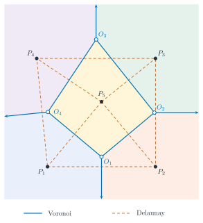
Na slici su pune točke \(P_i\) sjedišta, a prazne točke \(O_i\) središta opisanih kružnica trokuta; plave pune linije čine Voronoijev dijagram, a narančaste isprekidane linije Delaunayjevu triangulaciju. Boje pozadine razlikuju pojedine Voronoijeve regije, strelice označavaju neograničene bridove; prikazan je samo dio unutar konačnog prozora.
Nakon konstrukcije DT, koristeći postojeći kružni poredak bridova za nabrajanje strana i bridova, gornja se pretvorba obavlja u vremenu \(O(n)\), pa je ukupna vremenska složenost konstrukcije Voronoijeva dijagrama \(O(n \log n)\).
Zadaci
Luogu P6362 Euklidsko minimalno razapinjuće stablo u ravnini klasična primjena triangulacije
SGU 383 Caravans triangulacija + binary lifting
ContestHunter. Beskrajno uništenje triangulacija, pa dualni graf za konstrukciju Voronoijeva dijagrama
Codeforces Gym 103485M. Constellation collection nakon triangulacije izgraditi graf i provesti flood fill
Literatura i daljnje čitanje
- Wikipedia - Triangulation (geometry)
- Wikipedia - Delaunay triangulation
- Samuel Peterson - Computing Constrained Delaunay Triangulations in 2-D (1997-98)
-
Leonidas Guibas, Jorge Stolfi. Primitives for the Manipulation of General Subdivisions and the Computation of Voronoi Diagrams. ACM Transactions on Graphics, 4(2), 1985, 74–123. ↩
Contents
In geometry, a triangulation is a subdivision of a planar object into triangles, and by extension a subdivision of a higher-dimensional geometric object into simplices. For a given point set there are many triangulations, for example:
This page introduces the two-dimensional Delaunay triangulation (DT for short) and a divide-and-conquer algorithm for constructing it.
Delaunay triangulation
Definition
In mathematics and computational geometry, for a given discrete set of points \(P\) in the plane, its Delaunay triangulation DT(\(P\)) satisfies:
- Empty circle property: DT(\(P\)) is unique (if no four points are concyclic), and in DT(\(P\)) no other point lies inside the circumcircle of any triangle.
- Maximizing the minimum angle: among all triangulations the point set \(P\) can form, the triangles of DT(\(P\)) have the largest minimum angle. In this sense DT(\(P\)) is the triangulation closest to regular. Concretely, if two adjacent triangles form a convex quadrilateral, then after swapping its diagonal the minimum of the interior angles of the two triangles does not increase.
Properties
- Closest points: triangles are formed by the three closest points, and the segments (triangle edges) do not intersect each other.
- Uniqueness: no matter from which part of the region the construction starts, the final result is the same (if no four points of the set are concyclic).
- Optimality: if the diagonal of the convex quadrilateral formed by any two adjacent triangles can be swapped, the smallest of the six interior angles of the two triangles will not change.
- Most regular: if the minimum angles of all triangles of a triangulation are sorted in increasing order, the sequence obtained for the Delaunay triangulation has the largest values.
- Locality: adding, deleting or moving a single vertex only affects the neighboring triangles.
- Convex hull: the outer boundary of the triangulation forms a convex polygon (the convex hull).
Divide-and-conquer algorithm for constructing the DT
There are many algorithms for constructing the DT; below we present a divide-and-conquer algorithm with time complexity \(O(n \log n)\).
The first step of the divide-and-conquer construction is to sort the given point set in increasing order of the \(x\) coordinate, breaking ties by increasing \(y\) coordinate, and to remove coincident points. The figure below shows a sorted point set of size \(10\).
If there are fewer than \(2\) points, no edges are needed. Otherwise, the sorted point set is repeatedly split in the middle into two parts until the subsets have size \(2\) or \(3\). Two points are connected by an edge, three non-collinear points form a triangle, and for three collinear points only the two pairs of adjacent points (in sorted order) are connected.
Then, while returning from the recursion, the triangulations of the left and right subsets are merged in turn. After merging, the edges are classified as LL-edges (edges inside the left subset), RR-edges (edges inside the right subset) and LR-edges (edges connecting the left and right subsets); in the figure below they are shown in gray, red and blue respectively. To maintain the DT properties, merging may require deleting some LL-edges and RR-edges, but these two kinds of edges are never added.
The first step of merging the left and right triangulations is to find the lower common tangent of the two convex hulls and insert the corresponding base LR-edge. The recursion returns the boundary edges of the left and right hulls; starting from the rightmost point of the left hull and the leftmost point of the right hull, we move along the hull boundaries until no point lies to the right of the directed line from the left endpoint to the right endpoint.
Next, we need to determine the next LR-edge, the one immediately above the base LR-edge. For example, for the right point set, the possible (right) endpoints of the next LR-edge are the other endpoints of the RR-edges connected to the right endpoint of the base LR-edge (points \(6, 7, 9\)), while the left endpoint is point \(2\).
Take the right endpoint as an example. Starting from the ray toward the left endpoint of the base LR-edge, we check the RR-edges connected to the right endpoint in clockwise order:
- Only endpoints strictly above the base LR-edge are valid candidates, i.e. the point lies to the left of the directed line from the left endpoint of the base to its right endpoint. The corresponding clockwise rotation angle must be in \((0^\circ,180^\circ)\).
- Let the current candidate be \(c\) and the next adjacent neighbor in the same direction be \(d\). If \(d\) lies strictly inside the circumcircle of the two endpoints of the base LR-edge and \(c\), delete the RR-edge to \(c\) and continue checking the edge to \(d\).
- Otherwise keep the current candidate and stop checking on this side. Since this side is already a Delaunay triangulation, it suffices to compare adjacent candidate edges in circular order.
As in the figure above, we check points \(6,7,9\) in turn. The green circle corresponding to point \(6\) contains the next neighbor \(7\), so the RR-edge to \(6\) is deleted; the purple circle corresponding to point \(7\) does not contain the next neighbor \(9\), so \(7\) is kept as the right candidate. Afterwards it still has to be compared with the left candidate to determine the next LR-edge.
For the left point set, the procedure is mirrored: start from the ray toward the right endpoint of the base LR-edge and check in counterclockwise order.
When neither the left nor the right side has a valid candidate, the current base LR-edge is the upper common tangent and the merge is complete. If only one side has a valid candidate, connect it to the other endpoint of the base LR-edge to obtain the new LR-edge.
When both sides have valid candidates: if the right candidate lies strictly inside the circumcircle determined by the left candidate and the two endpoints of the base, choose the right candidate; otherwise choose the left candidate. Connect the chosen candidate to the endpoint of the base on the opposite side to obtain the new LR-edge. If the four points are concyclic, either choice works.
Once this LR-edge has been added, take it as the base LR-edge and repeat the steps above, adding the next one, until the merge is complete.
Implementation
If edges are stored only in unordered adjacency lists and all adjacent edges of both endpoints are scanned every time an LR-edge is added, the time complexity is \(O(n^2)\), because one endpoint may form several LR-edges in a row, causing its adjacency list to be scanned over and over.
The reference implementation uses the quad-edge1 structure to maintain the circular order of edges. Each undirected edge is recorded by four directed edges: two represent the two directions in the original graph and the other two represent the two directions in the dual graph. The four records are stored consecutively, so it suffices to maintain, for each directed edge, its origin and the next counterclockwise edge with the same origin; the following operations then take \(O(1)\) time:
| Operation | Meaning |
|---|---|
rev(e) |
the reversed edge |
onext(e) |
the next counterclockwise edge with the same origin |
oprev(e) |
the previous counterclockwise edge with the same origin |
lnext(e) |
move one edge forward along the boundary of the left face |
onext(rev(e)) |
move one edge backward along the boundary of the right face |
splice(a, b) modifies the circular relations in the original graph and the dual graph at the same time; it is used to join or split the rings containing two edges. connect(a, b) connects the end of a to the origin of b within the same face. When deleting an edge, its two directions are removed from their respective rings. These topological operations only modify a constant number of records; the reference implementation allocates and recycles edges with a dynamic array, with amortized \(O(1)\) cost.
In the code, base is directed from the right point set to the left point set, so the points "above" the base LR-edge in the figures lie to the right of the directed edge base. The left candidate edge is onext(rev(base)) and the right candidate edge is oprev(base); after deleting a candidate edge, we simply continue along the circular order on that side.
Implementation
#include <algorithm>
#include <cmath>
#include <limits>
#include <utility>
#include <vector>
using data_t = double;
struct Point {
data_t x, y;
int id;
};
class Delaunay {
// Each undirected edge consists of four slots
// Even slots represent the two directions in the original graph, odd slots the dual edges
// All links store indices, to avoid iterator invalidation
struct Edge {
int origin, next;
};
std::vector<Point> p;
std::vector<Edge> edges;
std::vector<int> free_edges;
// Approximate sign test with a relative tolerance
static int sign(data_t value, data_t scale) {
const data_t tolerance =
16 * std::numeric_limits<data_t>::epsilon() * scale;
return (value > tolerance) - (value < -tolerance);
}
static int cross(const Point& a, const Point& b, const Point& c) {
data_t u = (b.x - a.x) * (c.y - a.y);
data_t v = (b.y - a.y) * (c.x - a.x);
return sign(u - v, std::abs(u) + std::abs(v));
}
// With a, b, c in counterclockwise order, checks whether d lies inside the circumcircle
static bool in_circle(const Point& a, const Point& b, const Point& c,
const Point& d) {
data_t ax = a.x - d.x, ay = a.y - d.y;
data_t bx = b.x - d.x, by = b.y - d.y;
data_t cx = c.x - d.x, cy = c.y - d.y;
data_t a2 = ax * ax + ay * ay, b2 = bx * bx + by * by,
c2 = cx * cx + cy * cy;
data_t bc1 = bx * cy, bc2 = by * cx;
data_t ca1 = cx * ay, ca2 = cy * ax;
data_t ab1 = ax * by, ab2 = ay * bx;
data_t det = a2 * (bc1 - bc2) + b2 * (ca1 - ca2) + c2 * (ab1 - ab2);
// Accumulate absolute values before subtracting, so cancellation does not make us underestimate the rounding error
data_t scale = a2 * (std::abs(bc1) + std::abs(bc2)) +
b2 * (std::abs(ca1) + std::abs(ca2)) +
c2 * (std::abs(ab1) + std::abs(ab2));
return sign(det, scale) > 0;
}
static int rot(int e) { return (e & ~3) | ((e + 1) & 3); }
static int rev(int e) { return e ^ 2; }
int org(int e) const { return edges[e].origin; }
int dest(int e) const { return org(rev(e)); }
// Edges with the same origin form a circular linked list in counterclockwise order
int onext(int e) const { return edges[e].next; }
int oprev(int e) const { return rot(onext(rot(e))); }
// Advance one edge along the boundary of the face to the left of e
int lnext(int e) const { return rot(onext(rev(rot(e)))); }
bool left_of(int v, int e) const {
return cross(p[org(e)], p[dest(e)], p[v]) > 0;
}
bool right_of(int v, int e) const {
return cross(p[org(e)], p[dest(e)], p[v]) < 0;
}
int make_edge(int u, int v) {
int e;
if (free_edges.empty()) {
e = (int)edges.size();
edges.resize(edges.size() + 4);
} else {
e = free_edges.back();
free_edges.pop_back();
}
edges[e] = {u, e};
edges[e + 1] = {-1, e + 3};
edges[e + 2] = {v, e + 2};
edges[e + 3] = {-1, e + 1};
return e;
}
// Swap the successors of two edges and update the dual graph links at the same time
void splice(int a, int b) {
int alpha = rot(onext(a)), beta = rot(onext(b));
std::swap(edges[a].next, edges[b].next);
std::swap(edges[alpha].next, edges[beta].next);
}
void delete_edge(int e) {
splice(e, oprev(e));
splice(rev(e), oprev(rev(e)));
e &= ~3;
edges[e].origin = edges[e + 2].origin = -1;
free_edges.push_back(e);
}
// Add an edge from the end of a to the origin of b
int connect(int a, int b) {
int e = make_edge(dest(a), org(b));
splice(e, lnext(a));
splice(rev(e), b);
return e;
}
// Return the hull edges starting at the leftmost and rightmost vertex, with the outer face on the right and on the left respectively
// The range is [l, r); the recursion only handles cases with at least two points
std::pair<int, int> divide(int l, int r) {
if (r - l == 2) {
int a = make_edge(l, l + 1);
return {a, rev(a)};
}
if (r - l == 3) {
int a = make_edge(l, l + 1), b = make_edge(l + 1, l + 2);
splice(rev(a), b);
int turn = cross(p[l], p[l + 1], p[l + 2]);
if (turn == 0) return {a, rev(b)}; // collinear: keep only the edges between adjacent points
int c = connect(b, a);
if (turn > 0) return {a, rev(b)};
return {rev(c), c};
}
int m = l + (r - l) / 2;
auto left = divide(l, m), right = divide(m, r);
int ldo = left.first, ldi = left.second;
int rdi = right.first, rdo = right.second;
// Starting from the hull edges returned by the recursion, walk along the hulls to find the lower common tangent
while (true) {
if (left_of(org(rdi), ldi)) {
ldi = lnext(ldi);
} else if (right_of(org(ldi), rdi)) {
rdi = onext(rev(rdi));
} else {
break;
}
}
int base = connect(rev(rdi), ldi); // base points from the right side to the left side
if (org(ldi) == org(ldo)) ldo = rev(base);
if (org(rdi) == org(rdo)) rdo = base;
while (true) {
// Candidate edges come from the ordered circular adjacency list, so we only need the predecessor or successor of the current edge
int lcand = onext(rev(base));
if (right_of(dest(lcand), base)) {
while (in_circle(p[dest(base)], p[org(base)], p[dest(lcand)],
p[dest(onext(lcand))])) {
int next = onext(lcand);
delete_edge(lcand);
lcand = next;
}
}
int rcand = oprev(base);
if (right_of(dest(rcand), base)) {
while (in_circle(p[dest(base)], p[org(base)], p[dest(rcand)],
p[dest(oprev(rcand))])) {
int prev = oprev(rcand);
delete_edge(rcand);
rcand = prev;
}
}
bool lvalid = right_of(dest(lcand), base);
bool rvalid = right_of(dest(rcand), base);
if (!lvalid && !rvalid) break; // reached the upper common tangent
if (!lvalid || (rvalid && in_circle(p[dest(lcand)], p[org(lcand)],
p[org(rcand)], p[dest(rcand)]))) {
base = connect(rcand, rev(base));
} else {
base = connect(rev(base), rev(lcand));
}
}
return {ldo, rdo};
}
public:
// Points must be pairwise distinct and ids unique
void init(std::vector<Point> points) {
p = std::move(points);
edges.clear();
free_edges.clear();
std::sort(p.begin(), p.end(), [](const Point& a, const Point& b) {
return a.x < b.x || (a.x == b.x && a.y < b.y);
});
if (p.size() >= 2) divide(0, (int)p.size());
}
// Each undirected edge is returned once; endpoints are labeled with the original input ids
std::vector<std::pair<int, int>> getEdge() const {
std::vector<std::pair<int, int>> result;
for (int e = 0; e < (int)edges.size(); e += 4) {
if (org(e) != -1) result.emplace_back(p[org(e)].id, p[dest(e)].id);
}
return result;
}
};
Complexity
Suppose one merge involves \(k\) points. When finding the lower common tangent, every move advances along the hull boundary of one side, for \(O(k)\) moves in total. When selecting candidates, every further check is accompanied by the deletion of an LL-edge or RR-edge, and the two sub-triangulations together have only \(O(k)\) edges. Apart from these deletions, each iteration of the main merge loop performs a constant number of tests and adds one LR-edge; newly added LR-edges are not deleted again during this merge, so their number is also \(O(k)\). Therefore the total time of one merge is \(O(k)\).
The initial sorting takes \(O(n \log n)\), and the recursion satisfies \(T(n)=T(\lfloor n/2 \rfloor)+T(\lceil n/2 \rceil)+O(n)\), so the total time complexity is \(O(n \log n)\). At any moment the number of retained edges is \(O(n)\), and the code recycles the storage of deleted edges instead of keeping all historical edges, so the space complexity is \(O(n)\).
Voronoi diagram
Given \(n\ge 1\) pairwise distinct seed points in the plane, the Voronoi region of each seed consists of all points whose distance to that seed is not greater than the distance to any other seed. These regions are convex, possibly unbounded; their interiors are pairwise disjoint and together they cover the whole plane; the common boundary of two adjacent regions lies on the perpendicular bisector of the segment connecting the corresponding two seeds.
For a point set that is not entirely collinear and has no four concyclic points, the Voronoi diagram and the Delaunay triangulation are dual to each other: each triangular face corresponds to its circumcenter, each interior edge corresponds to the segment connecting the circumcenters of the two triangles on its sides, and each convex hull edge corresponds to a ray starting from the circumcenter of its triangle, perpendicular to that edge and pointing outward from the hull. If four concyclic points exist, after the construction the coincident circumcenters must be merged and zero-length dual edges removed. If all points are collinear, the Voronoi edges are the perpendicular bisectors of adjacent points in sorted order; if there is only one point, its region is the whole plane.
In the figure above, the solid points \(P_i\) are the seeds and the hollow points \(O_i\) are the circumcenters of the triangles; the solid blue lines form the Voronoi diagram and the dashed orange lines form the Delaunay triangulation. The background colors distinguish the Voronoi regions, the arrows indicate unbounded edges; only the part inside a finite window is shown.
After constructing the DT, using the existing circular order of edges to enumerate faces and edges, the conversion above can be done in \(O(n)\) time, so the total time complexity of constructing the Voronoi diagram is \(O(n \log n)\).
Problems
Luogu P6362 Planar Euclidean Minimum Spanning Tree classic application of triangulation
SGU 383 Caravans triangulation + binary lifting
ContestHunter. Endless Destruction triangulation, then the dual graph to build the Voronoi diagram
Codeforces Gym 103485M. Constellation collection build a graph after triangulation and run a flood fill
References and further reading
- Wikipedia - Triangulation (geometry)
- Wikipedia - Delaunay triangulation
- Samuel Peterson - Computing Constrained Delaunay Triangulations in 2-D (1997-98)
-
Leonidas Guibas, Jorge Stolfi. Primitives for the Manipulation of General Subdivisions and the Computation of Voronoi Diagrams. ACM Transactions on Graphics, 4(2), 1985, 74–123. ↩